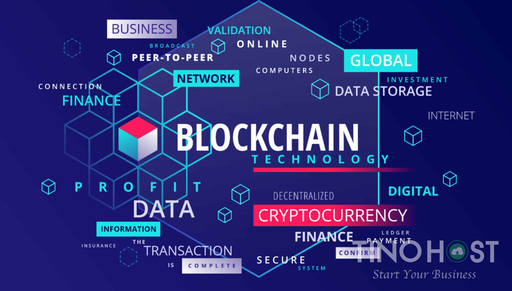

Blockchain and cryptocurrencies
Author: Le Anh Quan
What does it do?
A blockchain is a decentralized ledger of all transactions across a peer-to-peer network. Using this technology, participants can confirm transactions without a need for a central clearing authority. Blockchain is the technology that enables the existence of cryptocurrency. Bitcoin is the name of the best-known cryptocurrency, the one for which blockchain technology was invented. A cryptocurrency is a medium of exchange, but is digital and uses encryption techniques to control the creation of monetary units and to verify the transfer of funds. Nowadays blockchain and cryptocurrency is starting to play a more important role in society thanks to its benefits and potential. The most well-known use of blockchain is with crypto currency such as Bitcoin, Bitcoin has earned its fame as the best-known cryptocurrency because it has cemented itself as a legitimate trading currency and the value of Bitcoin is very high at around 55000 USD per Bitcoin. Other than Bitcoin, other cryptocurrencies such as Ethereum and Litecoin is getting more and more value and recognition. One cryptocurrency called Dogecoin have even gotten mass media coverage due to its value rising in the hundreds despite being created as a joke. Developers have also started to create a new way to apply cryptocurrency and that is to combine it with a game, creating blockchain games. One example of this is the most successful blockchain games Axie Infinity, Axie Infinity is a perfect combination of a game and blockchain technology in the form of Axie coin, this model work so well that it has over 4 billion dollars turned into Axie coin and it has become a side job for extra income in countries with low GDP. Aside from cryptocurrency, blockchain is not apply in many areas but due to its benefit of increase transparency, trackable and reduction cost due to no ledger, many big companies across many areas are currently researching into block chain as they see the potential this technology has. Both cryptocurrency and blockchain have bright future ahead of them. Cryptocurrency like Bitcoin is already accepted as a trading currency but at of this moment it is still a niche one and usually traded back into the country currency because of its unstable nature. But with more mainstream exposure every year, more services are offering payment in cryptocurrency and in the further future it will be a mainstream trading currency that have similar importance as USD or EUR, and loses its unstable nature and become more than just a riskier form of stocks. Blockchain on the other hand, although yet to have many real-world applications but its potential to be applied in many areas is enormous. Transactions between individuals or between companies can be less expensive and faster using blockchain, both sides will know the term of the contract and since the contact is hosted online using blockchain technology, it can always be check and its security will be guaranteed and if something happen, blockchain ensure it will be easily trace and recover, not only that the lack of a third-party middle man will further reduce the cost while ensuring no bias occurred. Blockchain will also keep data such as your Social Security number, date of birth, and other identifying information on a public that are more secure than current systems more susceptible to hacks. Blockchain technology can also be used to secure access to identifying information while improving access for those who need it in industries such as travel, healthcare, finance, and education. Further uses of blockchain include using its traceable nature to ensure that voting is done correctly since every vote can be trace back to the voter making that no one vote more than once, or it can be use to make sure no illegal copies of music and films exist.
What is the likely impact?
Both cryptocurrency and blockchain are going to cause change to the world we live today. Even though we already have online transaction through online wallets like Momo, cryptocurrency will allow global transaction to be done with ease since there will be no need for exchange between country currency. Cryptocurrency will also be more secure than normal online since it uses blockchain with all of its security benefits. Company will start to pay with cryptocurrency or even transfer their funds into cryptocurrency once it become stable because of its increase security and traceable nature. Governments will have to update their laws to adapt to cryptocurrency since in developing countries like Vietnam it is still a new concept. Blockchain not only cause change through the use of cryptocurrency as mentioned above but also through its applications in other areas. More actions will be done online such as entering personal information for healthcare and education, voting and transaction to make use of the simplicity, security and efficiency of blockchain technology while also reduce the pricing needed. As new jobs and services will be created to adapt to the rise of these new concept, existing jobs will be replaced unless they adapt to this technology. Banks and Online wallet will have to transfer to using well-known cryptocurrency such as Bitcoin or integrate cryptocurrency into their system. Third-party in companies contract will also be made obsolete since blockchain make sure the contract is as transparent, secure, fast and traceable as possible so the two sides will not need to spend extra money on a third-party that lack the benefits of blockchain. These are just the tip of the iceberg for the change that cryptocurrency and blockchain are going to cause and as they gain more attention over time.
How will this affect you?
These technologies also affect me in a variety of way. Cryptocurrency will not affect my life or those of my family because since my family value stability so they do not find much interested in cryptocurrency because of its unstable trait. I myself am in the line of thought with my family and since my major will not interact much with it, I would only do some research about it because of its potential in the future. Blockchain on the other hand is something I would spend time doing research because of its potential to change and possibly revolutionize many areas in the world. I would spend time studying about blockchain and prioritize courses that touches it when picking course. I would also follow news about progress on blockchain so I can know of the newest advancement in the technology. If Vietnam is to use blockchain in any areas I would find information on it and notified my family so they can adapt to the change. My family is not too interested in technology nor do they understand much about blockchain but they are interested in the benefits that it brings and will be willing to find out more about it should it comes to Vietnam. In conclusion, both cryptocurrency and blockchain are amazing technologies with enormous potential to cause massive change across many areas. However, while cryptocurrency has been quite successful with even mainstream attention, blockchain is still in the testing phase in many areas but have been successful in the areas it is applied in such as cryptocurrency or Ethereum.in the future as these technologies gains more attention and funding, they may revolutionize the world either by cryptocurrency becoming a mainstream stable trading currency or blockchain transferring many processes online to take advantage of all its benefits.
Reference
Comming soon